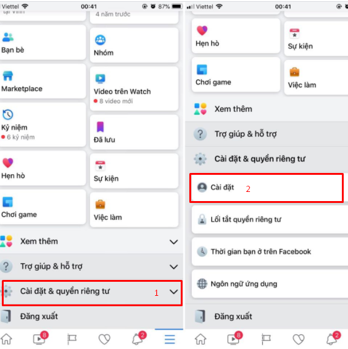

Cách chuyển bạn bè thành người theo dõi trên Facebook (follow)

Ty Nguyen
CEO ❤️ AhaChat. Love babies & chatbot.
Bạn đang muốn tăng lượt theo dõi (follow) cho tài khoản facebook? Bạn đang tìm cách chuyển bạn bè thành người theo dõi trên Facebook nhưng chưa biết làm thế nào? Vậy thì còn chần chừ gì nữa mà không đọc ngay bài viết dưới đây để giải đáp các thắc mắc đó, chắc chắn bạn sẽ thấy hữu ích, đừng bỏ qua nhé!
1. Lý do Facebook có nhiều người kết bạn nhưng không có người theo dõi
Chắc hẳn có không ít người dùng mạng xã hội Facebook đã từng thắc mắc vì sao tài khoản Facebook có nhiều lời mời kết bạn nhưng chẳng có lượt theo dõi nào. Dưới đây là một vài lý do giúp bạn giải đáp thắc mắc đó:
Lý do 1: Chưa bật tính năng theo dõi
Có thể tài khoản Facebook của bạn đã tắt tính năng theo dõi. Vì vậy khi người dùng vào nick bạn kết bạn sẽ không hiển thị lượt theo dõi. Muốn hiển thị lượt theo dõi trong trường hợp này bạn cần phải bật tính năng theo dõi trên facebook. Để khi có người kết bạn sẽ tự động chuyển thành lượt theo dõi hoặc có nhiều người không thích kết bạn với bạn mà chỉ muốn theo dõi bạn thì họ có thể ấn vào nút theo dõi thay vì kết bạn. Nếu bạn chưa biết cách bật tính năng theo dõi trên Facebook thì có thể xem cách bật tại đây.
Lý do 2: Facebook không còn lời mời kết bạn
Facebook của bạn có nhiều bạn bè nhưng lại không có lời mời kết bạn nên không có lượt theo dõi nữa. Bởi với Facebook, nếu đã đồng ý kết bạn và trở thành bạn bè thì sẽ không còn là lượt theo dõi nữa. Chỉ khi có ai đó gửi lời mời kết bạn đến nick bạn nhưng bạn không đồng ý thì lúc này mới được tính là lượt theo dõi.
2. Cách chuyển bạn bè thành người theo dõi trên Facebook
Làm thế nào để chuyển bạn bè thành người theo dõi trên Facebook?
Để chuyển bạn bè thành người theo dõi trên Facebook, các thao tác cũng khá đơn giản, bạn chỉ cần làm theo các bước hướng dẫn sau:
Trên máy tính
Bước 1: Đăng nhập vào tài khoản Facebook mà bạn muốn chuyển bạn bè thành người theo dõi. Tại giao diện trang chủ Facebook, bạn bấm vào biểu tượng hình tam giác ngược ở góc phải phía trên màn hình, rồi bấm chọn vào mục Cài đặt.
Bước 2: Sau khi bấm vào Cài đặt, xuất hiện giao diện mới, bạn bấm chọn vào mục Quyền riêng tư ở menu phía bên trái màn hình. Tiếp đến, bạn tìm đến mục Ai có thể xem bài viết của bạn trong tương lai rồi click chuột vào Chỉnh sửa như hình dưới đây.
Bước 3: Tiếp theo đó, tại mục Ai có thể xem các bài viết của bạn trong tương lai, bạn chuyển thành quyền Công khai.
Như vậy là những người gửi lời mời kết bạn đến nick Facebook của bạn sau thời gian này sẽ tự động chuyển thành trạng thái đang theo dõi nick bạn.
Tuy nhiên, bạn nên lưu ý rằng, khi có bất kể ai gửi lời mời kết bạn nếu bạn không đồng ý thì lượt follow sẽ tăng. Còn nếu bạn đã đồng ý lời mời kết bạn từ họ thì đã thành bạn bè với nhau trên Facebook và không chuyển về thành người theo dõi được nữa.
Trên điện thoại
Bước 1: Đầu tiên bạn cũng cần phải đăng nhập vào tài khoản Facebook qua ứng dụng Facebook trên điện thoại. Tại giao diện trang chủ sau khi đăng nhập, bạn bấm vào biểu tượng 3 gạch ngang ở góc phải phía dưới màn hình.
Bước 2: Tại giao diện mới xuất hiện, bạn kéo xuống dưới bấm chọn mục Cài đặt & quyền riêng tư rồi tiếp tục bấm vào mục Cài đặt.

Bước 3: Kế tiếp bạn tìm đến mục Cài đặt quyền riêng tư và bấm vào đó.
Bước 4: Tại giao diện mục Cài đặt quyền riêng tư, bạn bấm vào mục Ai có thể xem các bài viết của bạn trong tương lai rồi chọn chế độ Công khai như hình dưới.
Như vậy, bài viết trên đây đã hướng dẫn bạn cách chuyển bạn bè thành người theo dõi trên Facebook cực đơn giản và dễ thực hiện nhất. Trong quá trình thực hiện, bạn có thắc mắc cần chúng tôi giải đáp thì để lại câu hỏi ngay mục bình luận dưới đây nhé. Hy vọng bài viết đã mang đến cho bạn những thông tin bổ ích. Chúc bạn thực hiện thành công!